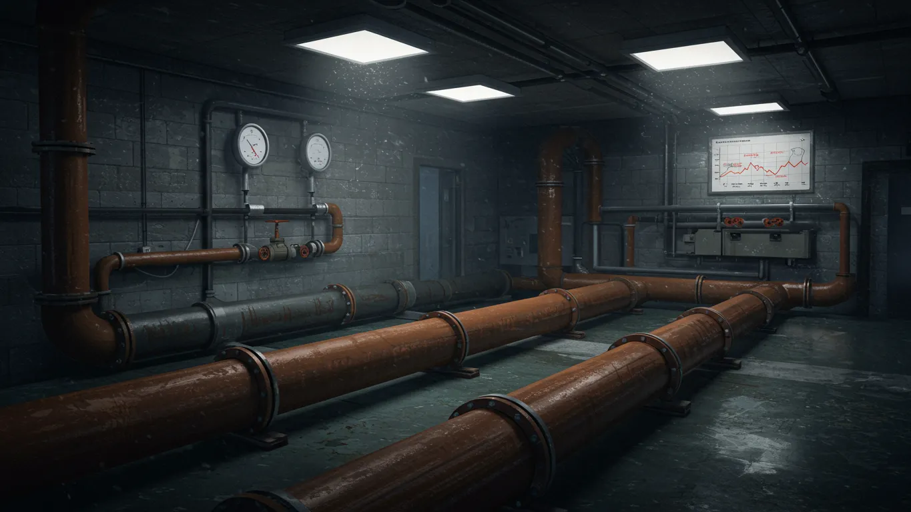
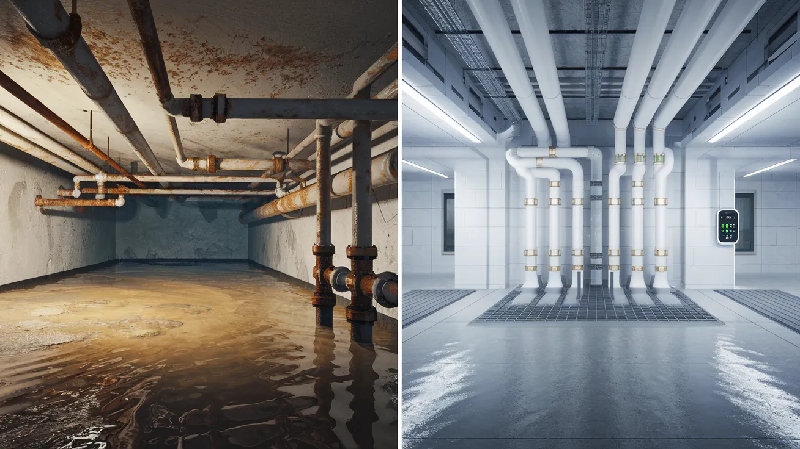
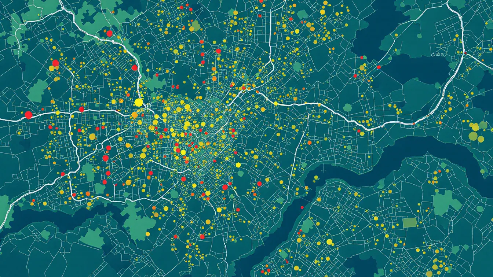
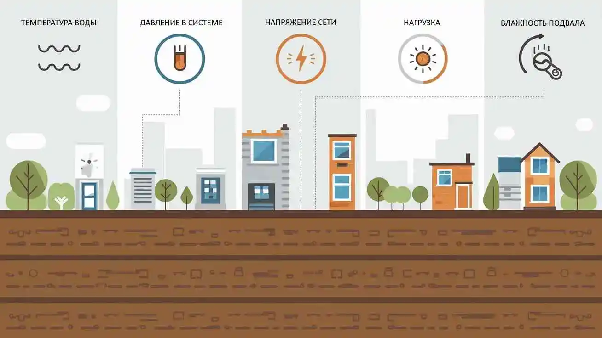
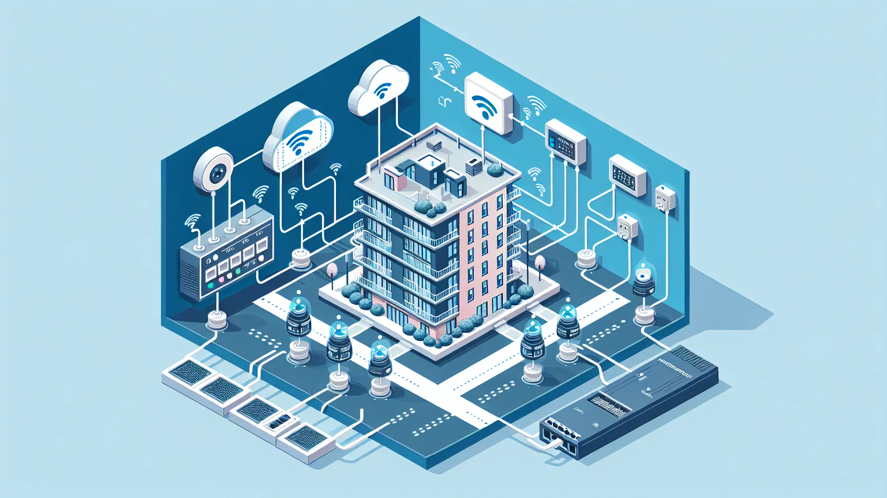
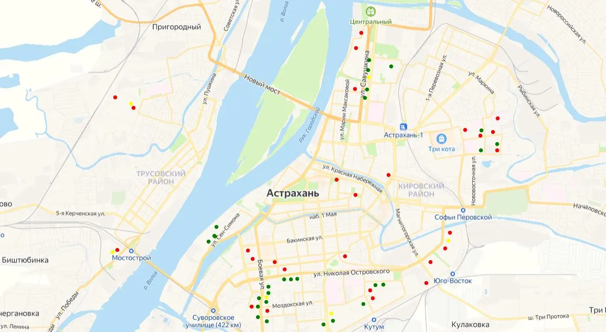
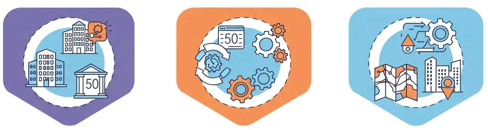
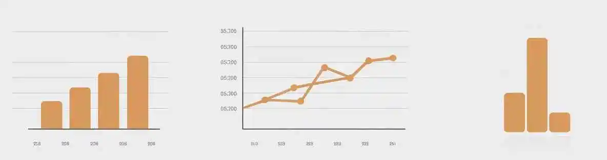
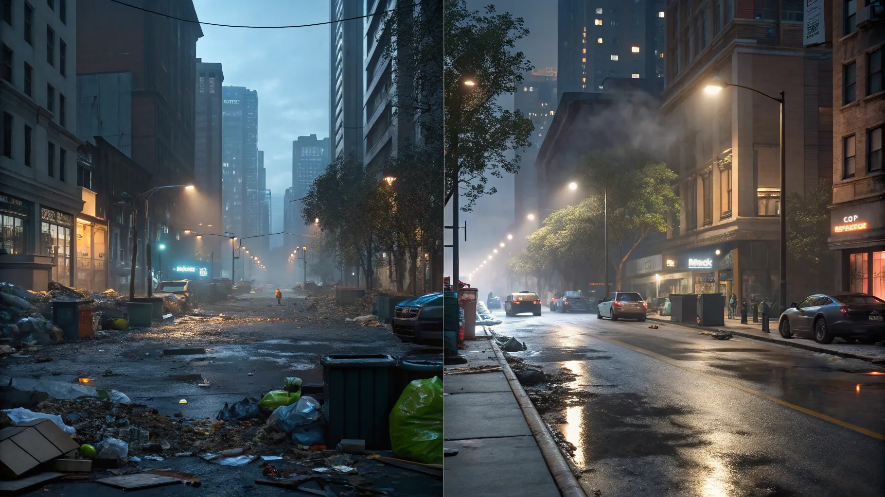

Цифровая карта ЖКХ
Мониторинг коммунальных услуг в реальном времени
Пилотный проект — Астрахань, 2025
Проблематика
- Нет централизованного мониторинга ЖКХ
- Реакция служб — только по жалобам
- Аварии устраняются поздно
- Нет визуализации данных по городу

Цели проекта
- Онлайн-мониторинг домов
- Прозрачность работы УК и служб
- Снижение аварий и жалоб
- Цифровизация ЖКХ

Функциональные возможности
- Интерактивная карта города
- Слои по видам ресурсов: вода, отопление, электричество
- Параметры: температура, давление, влажность, напряжение
- Подсветка аномалий: 🔴 отклонения, 🟡 предупреждения

Контролируемые параметры
| Ресурс | Параметры |
|---|
| ХВС / ГВС | Температура, давление |
| Отопление | Температура подачи и обратки, давление |
| Электроснабжение | Напряжение, нагрузка |
| Подвальные помещения | Влажность, затопления |

Архитектура решения
Датчики → Контроллер → Ethernet-сеть → Сервер → Веб-интерфейс

Интерфейс карты
Карта города Астрахань с цветовой индикацией состояния домов
- 🟢 Норма
- 🟡 Предупреждение
- 🔴 Авария

Сценарий работы
- Установка оборудования в доме
- Сбор данных → сервер
- Отображение на карте
- Оповещения при отклонениях
Этапы внедрения
- Пилот (50 домов)
- Анализ, корректировка
- Масштабирование

Смета пилотного проекта
- Оборудование: 1.7 млн ₽
- Разработка ПО: 2.1 млн ₽
- Сервер + поддержка: 0.36 млн ₽
- Монтаж: 0.5 млн ₽
- Итого: 4.72 млн ₽

Ожидаемый эффект
- Контроль ЖКХ в реальном времени
- Прозрачность перед горожанами
- Снижение аварий
- Экономия ресурсов

Заключение
Готовность к пилотному запуску
Масштабируемость на весь город
Поддержка цифровизации ЖКХ в Астрахани
Открыть демо-карту
Для ознакомления с демо-версией проекта, откройте демо-карту ЖКХ.